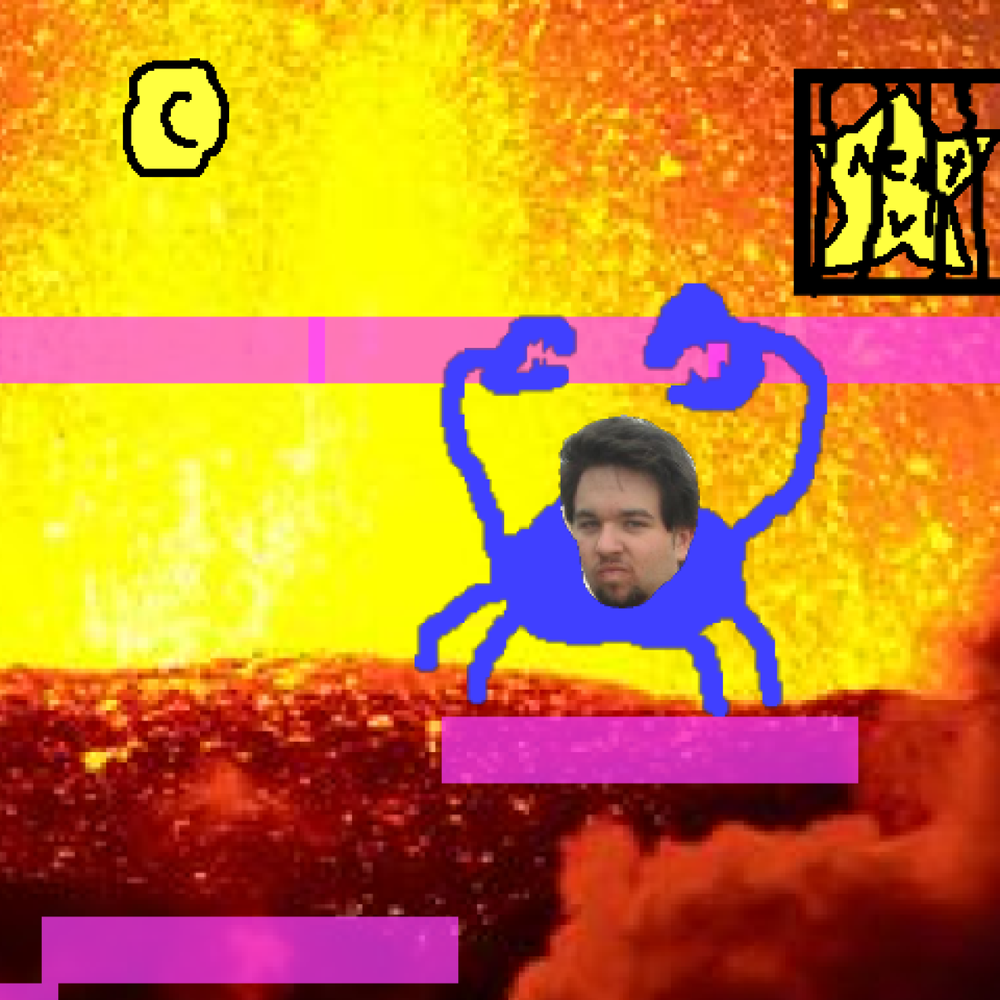

Do not view if you have issues with flashing colors and lights. This one is full of ’em. Plane jam game.
JoeGame is perfect game! Jump platform! Collect coin! Fight cat! Joe go! King of MSPaint Games!
Lots of level too.

Game 7/100
Do not view if you have issues with flashing colors and lights. This one is full of ’em. Plane jam game. JoeGame is perfect game! Jump platform! Collect coin! Fight cat! Joe go! King of MSPaint Games!
Do not view if you have issues with flashing colors and lights. This one is full of ’em. Plane jam game.
JoeGame is perfect game! Jump platform! Collect coin! Fight cat! Joe go! King of MSPaint Games!
Lots of level too.